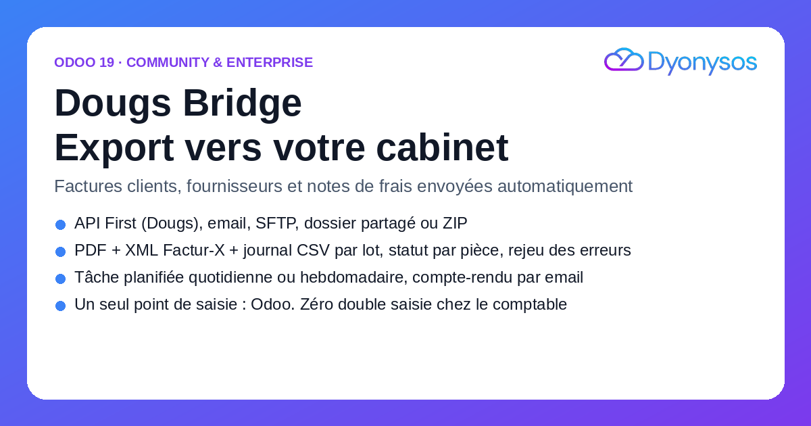
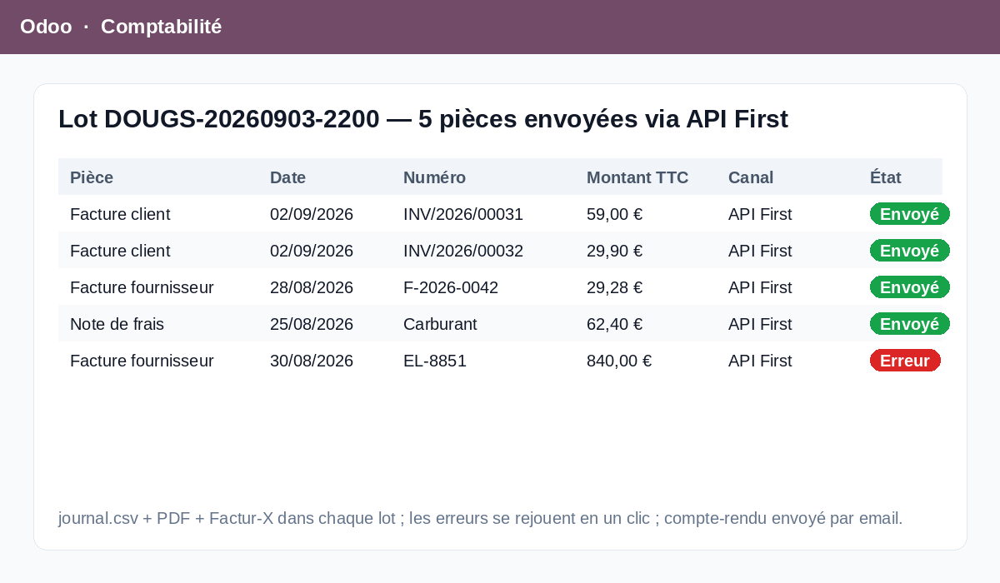

Vous facturez, enregistrez vos achats et vos notes de frais dans Odoo. Dougs Bridge sélectionne les pièces validées (factures et avoirs clients, factures et avoirs fournisseurs, notes de frais approuvées), construit un lot — PDF de chaque pièce, XML Factur-X pour les ventes, journal.csv récapitulatif — et le transmet à votre cabinet.
Chaque pièce porte son état (à envoyer, envoyée, erreur) ; les erreurs se rejouent en un clic ; un compte-rendu vous est envoyé par email après chaque lot.
API First (Dougs) ou toute API REST du cabinet, email vers l'adresse de collecte, SFTP, dossier partagé (Google Drive / Nextcloud synchronisé sur le serveur) ou simple ZIP à déposer soi-même.
Une action planifiée crée et envoie un lot chaque jour ou chaque semaine, avec un délai de grâce configurable pour laisser le temps de corriger une facture fraîchement validée.
Menu Comptabilité › Envois au cabinet : tous les lots, leurs pièces, le journal d'envoi et le ZIP archivé. Sur chaque facture, l'état « Envoyé au cabinet » et sa date.
Bonus Community : corrige l'export Factur-X d'Odoo 19 Community qui échoue sans les champs de charges constatées d'avance Enterprise.
Compatibilité : Odoo 19 Community et Enterprise. Dépend de account, hr_expense, account_edi_ubl_cii. Python : requests (et paramiko pour SFTP).
Développé par DYONYSOS — intégration Odoo, automatisation et IA pour PME.
Support : welcome@dyonysos.fr · dyonysos.fr